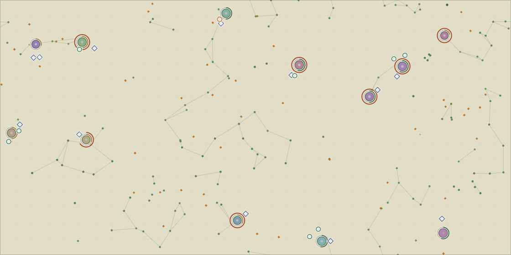

交流想法
分享生态现象、机制设想或算法实验。在讨论里补充种子、场景和观察结果，方便别人复现。
进入 GitHub 讨论
用 GitHub 账号发布作品，便可出现在这里。下载公开文件无需登录。
也可以在上方的 GitHub 列表浏览作品。
正在读取扩展目录…
ZIP 版使用解压后的游戏目录。单文件版默认用 %LOCALAPPDATA%\agentsim\portable\3.2.1\，该位置无法写入时使用 EXE 旁的 .agentsim\3.2.1\。
按扩展卡片的说明放好文件，目录缺失时可新建。先保存进度并关闭游戏窗口，再从任务管理器结束当前游戏的后台 agentsim.exe，然后重新启动游戏以发现新扩展。
有规则构想、种群观察、可复现的对照实验，或想分享自己做的扩展，都可以参与。
分享生态现象、机制设想或算法实验。在讨论里补充种子、场景和观察结果，方便别人复现。
进入 GitHub 讨论改进内核机制、提交新的 C++ 策略，或帮忙完善扩展开发说明。
查看贡献指南